library(tidyverse)
library(topicmodels)
library(tidytext)
library(lexicon)
library(factoextra)Topic_model_TMN
Load Libraries
Read in dataset
movies <- read.csv("movie_plots.csv", header = TRUE)Unnest tokens using tidytext:
#takes the plot column and make it one word per row
plots_by_word <- movies |> unnest_tokens(word, Plot)
#take out words like "the", "to", "of"...
#count how many of the remaining words appear in the plot
plot_word_counts <- plots_by_word |> anti_join(stop_words) |>
count(Movie.Name, word, sort = TRUE)Joining with `by = join_by(word)`Remove common names using lexicon:
data("freq_first_names")
data("freq_last_names")
first_names <- tolower(freq_first_names$Name) #convert to lower case
last_names <- tolower(freq_last_names)
plot_word_counts <- plot_word_counts |> filter(!(word %in% first_names))
plot_word_counts <- plot_word_counts |> filter(!(word %in% last_names))Cast word counts to document term matrix
plots_dtm <- plot_word_counts |> cast_dtm(Movie.Name, word, n)Look at dimensions of matrix
#Distinct words
dim(plot_word_counts |> distinct(word))[1][1] 13394dim(movies)[1] 1077 2LDA with 30 topics:
plots_lda <- LDA(plots_dtm, k = 30, control = list(seed = 1066))Retrieving Gammas:
plots_gamma <- tidy(plots_lda, matrix = "gamma")
#gamma is per-document-per-topic probabilities
#each values is an estimated proportion of words from that document that are generated
#from that topicRetrieving Betas:
plots_beta <- tidy(plots_lda, matrix = "beta")
#beta is the probability of that term being generated from that topicPivoting the plots_gamma table wider so we can cluster by gammas for each topic
plots_gamma_wider <- plots_gamma |> pivot_wider(names_from = topic,
values_from = gamma)
#this will give a document and 30 values of gammas for 30 topics per row,
#more neatly organized formatCreate 8 clusters for 8 genres:
set.seed(8)
plots_gamma_wider_no_na <- plots_gamma_wider |> drop_na()
cluster <- kmeans(plots_gamma_wider_no_na |> select(-document), 10)
plot_clusters <- fviz_cluster(cluster, data = plots_gamma_wider_no_na |> select(-document))Look into genres in each cluster. Read in data with genres:
english_movies_with_genres <- read.csv("movie_plots_with_genres.csv")
clusters <- cluster[["cluster"]]
plots_gamma_wider$cluster <- clustersLet’s get the colors used in each cluster for further EDA:
# Extract the colors used in the plot
colors_used <- ggplot_build(plot_clusters)$data[[2]]$colour
# Display the unique colors used
unique(colors_used) [1] "#F8766D" "#D89000" "#A3A500" "#39B600" "#00BF7D" "#00BFC4" "#00B0F6"
[8] "#9590FF" "#E76BF3" "#FF62BC"Let’s look at individual cluster to understand a bit more of context, start with cluster10 because that cluster seems to cover the most range on the cluster map.
cluster_10 <- plots_gamma_wider |> filter(cluster == 10)
#let's look at the max values of gammas for each movie and see which topic they fall into
cluster_10$max_value <- apply(cluster_10[, 2:31], 1, max)
#let's get the topic number of the max gammas for each row
cluster_10$max_colname <- apply(cluster_10[, 2:31], 1,
function(x) colnames(cluster_10[, 2:31])[which.max(x)])
#lets plot the count of each topic that has the max gamma value for a movie
# Create a data frame with the counts
count_cluster10 <- as.data.frame(table(cluster_10$max_colname))
count_cluster10$Var1 <- factor(count_cluster10$Var1,
levels = count_cluster10$Var1[order(-count_cluster10$Freq)])
ggplot(count_cluster10, aes(x = Var1, y = Freq)) +
geom_bar(stat = "identity", fill = "#FF62BC") +
labs(title = "Count of Topics that Contain Max Gammas in Cluster 10",
x = "Topic", y = "Count") +
theme_minimal()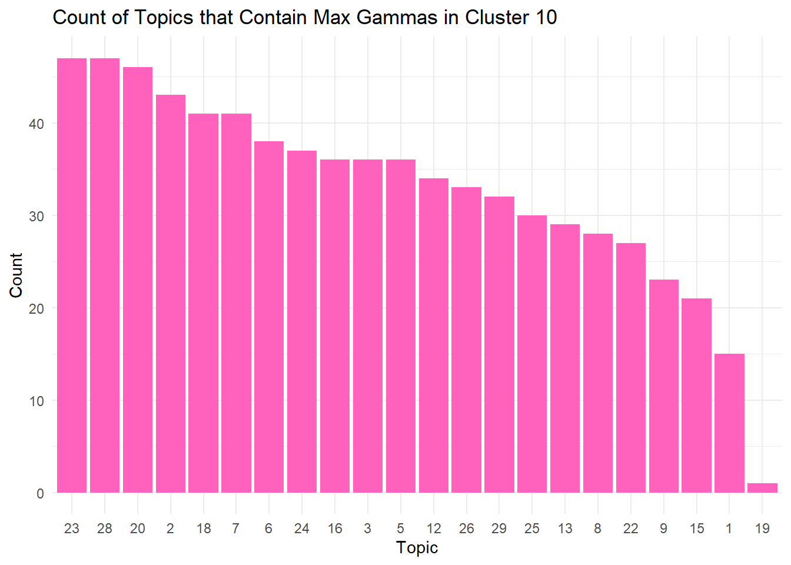
Let’s do the same thing for cluster1 and compare with the results from cluster10:
cluster_1 <- plots_gamma_wider |> filter(cluster == 1)
cluster_1$max_value <- apply(cluster_1[, 2:31], 1, max)
cluster_1$max_colname <- apply(cluster_1[, 2:31], 1,
function(x) colnames(cluster_1[, 2:31])[which.max(x)])
count_cluster1 <- as.data.frame(table(cluster_1$max_colname))
count_cluster1$Var1 <- factor(count_cluster1$Var1,
levels = count_cluster1$Var1[order(-count_cluster1$Freq)])
ggplot(count_cluster1, aes(x = Var1, y = Freq)) +
geom_bar(stat = "identity", fill = "#F8766D") +
labs(title = "Count of Topics that Contain Max Gammas in Cluster 1",
x = "Topic", y = "Count") +
theme_minimal()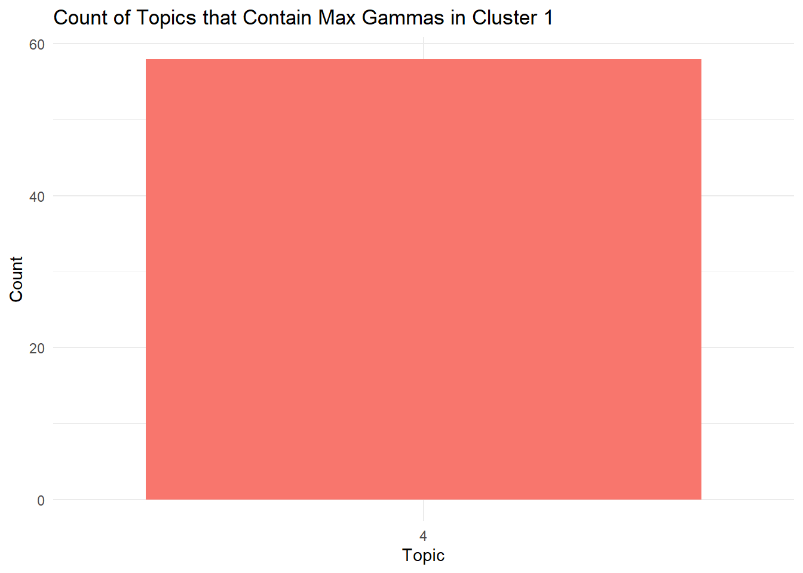
Observation: Interesting that all of cluster 1 count for max gammas is topic 4. Topic 4 was not counted as max at all in cluster 10 so perhaps cluster 10 and 4 genres might not be so closely related… let’s look at more individual clusters.
Let’s look at cluster2:
cluster_2 <- plots_gamma_wider |> filter(cluster == 2)
cluster_2$max_value <- apply(cluster_2[, 2:31], 1, max)
cluster_2$max_colname <- apply(cluster_2[, 2:31], 1,
function(x) colnames(cluster_2[, 2:31])[which.max(x)])
count_cluster2 <- as.data.frame(table(cluster_2$max_colname))
count_cluster2$Var1 <- factor(count_cluster2$Var1,
levels = count_cluster2$Var1[order(-count_cluster2$Freq)])
ggplot(count_cluster2, aes(x = Var1, y = Freq)) +
geom_bar(stat = "identity", fill = "#D89000") +
labs(title = "Count of Topics that Contain Max Gammas in Cluster 2",
x = "Topic", y = "Count") +
theme_minimal()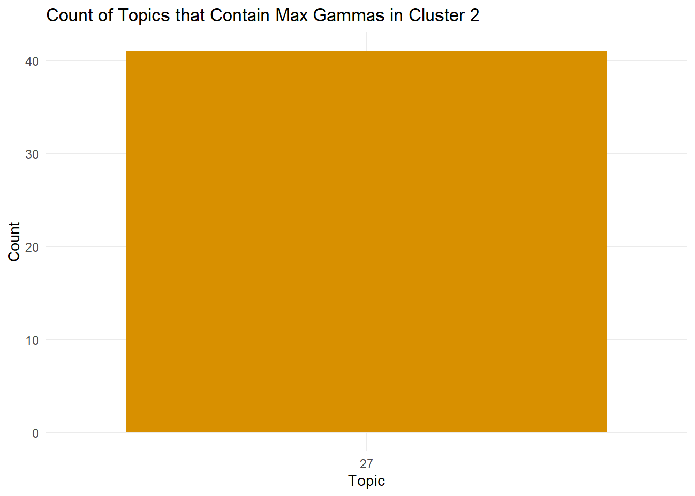
Observation: Cluster2 contains all max gammas from Topic 27, which does not show up as max gammas counts in Cluster10.
Let’s look at Cluster3.
cluster_3 <- plots_gamma_wider |> filter(cluster == 3)
cluster_3$max_value <- apply(cluster_3[, 2:31], 1, max)
cluster_3$max_colname <- apply(cluster_3[, 2:31], 1,
function(x) colnames(cluster_3[, 2:31])[which.max(x)])
count_cluster3 <- as.data.frame(table(cluster_3$max_colname))
count_cluster3$Var1 <- factor(count_cluster3$Var1,
levels = count_cluster3$Var1[order(-count_cluster3$Freq)])
ggplot(count_cluster3, aes(x = Var1, y = Freq)) +
geom_bar(stat = "identity", fill = "#A3A500") +
labs(title = "Count of Topics that Contain Max Gammas in Cluster 3",
x = "Topic", y = "Count") +
theme_minimal()Observation: Cluster3 contains all max gammas from Topic 14, which does not show up as max gammas counts in Cluster10.
Let’s look at Cluster4.
cluster_4 <- plots_gamma_wider |> filter(cluster == 4)
cluster_4$max_value <- apply(cluster_4[, 2:31], 1, max)
cluster_4$max_colname <- apply(cluster_4[, 2:31], 1,
function(x) colnames(cluster_4[, 2:31])[which.max(x)])
count_cluster4 <- as.data.frame(table(cluster_4$max_colname))
count_cluster4$Var1 <- factor(count_cluster4$Var1,
levels = count_cluster4$Var1[order(-count_cluster4$Freq)])
ggplot(count_cluster4, aes(x = Var1, y = Freq)) +
geom_bar(stat = "identity", fill = "#39B600") +
labs(title = "Count of Topics that Contain Max Gammas in Cluster 4",
x = "Topic", y = "Count") +
theme_minimal()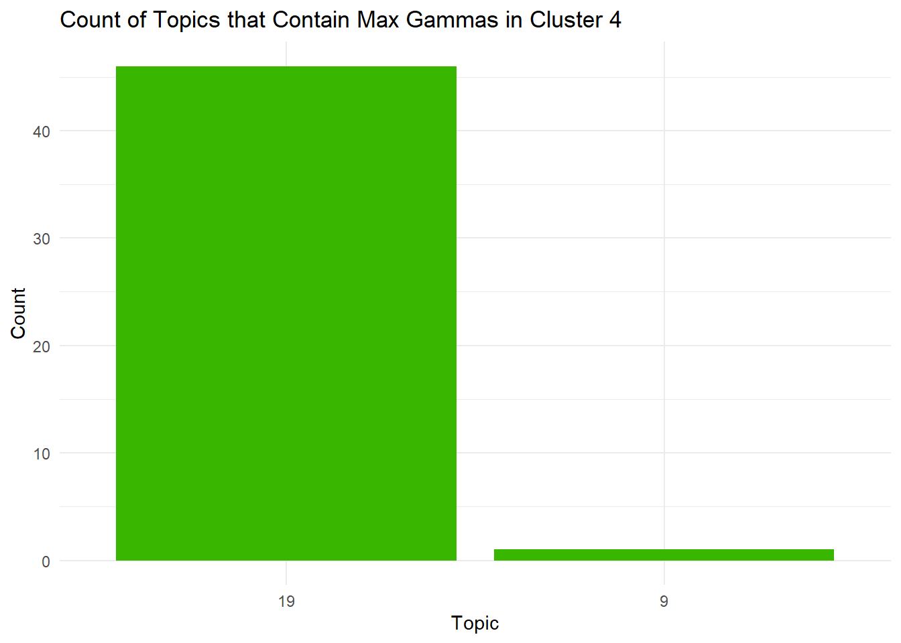
Observation: majority of max gammas counts fall in topic 19 with a few falling in topic 9. Both of these tops show up in the plot of max gamma counts for cluster 10. However, with cluster 10, topic 9 has a much higher count than topic 19, so I would say there’s likely not too much overlap between cluster 4 and cluster 10.
Let’s look at Cluster5:
cluster_5 <- plots_gamma_wider |> filter(cluster == 5)
cluster_5$max_value <- apply(cluster_5[, 2:31], 1, max)
cluster_5$max_colname <- apply(cluster_5[, 2:31], 1,
function(x) colnames(cluster_5[, 2:31])[which.max(x)])
count_cluster5 <- as.data.frame(table(cluster_5$max_colname))
count_cluster5$Var1 <- factor(count_cluster5$Var1,
levels = count_cluster5$Var1[order(-count_cluster5$Freq)])
ggplot(count_cluster5, aes(x = Var1, y = Freq)) +
geom_bar(stat = "identity", fill = "#00BF7D") +
labs(title = "Count of Topics that Contain Max Gammas in Cluster 5",
x = "Topic", y = "Count") +
theme_minimal()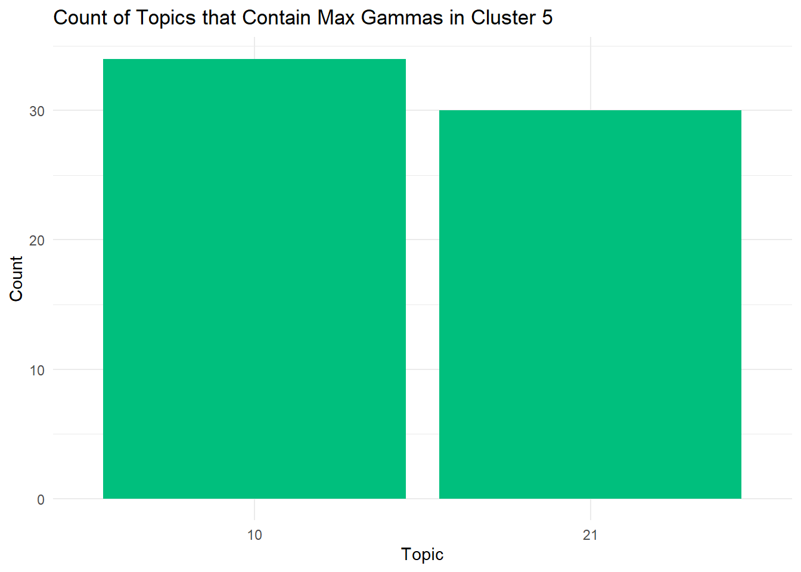
Observation: Cluster 5 seems to have a mix between topic 10 and topic 21. No overlap with cluster 10.
Let’s look at Cluster 6:
cluster_6 <- plots_gamma_wider |> filter(cluster == 6)
cluster_6$max_value <- apply(cluster_6[, 2:31], 1, max)
cluster_6$max_colname <- apply(cluster_6[, 2:31], 1,
function(x) colnames(cluster_6[, 2:31])[which.max(x)])
count_cluster6 <- as.data.frame(table(cluster_6$max_colname))
count_cluster6$Var1 <- factor(count_cluster6$Var1,
levels = count_cluster6$Var1[order(-count_cluster6$Freq)])
ggplot(count_cluster6, aes(x = Var1, y = Freq)) +
geom_bar(stat = "identity", fill = "#00BFC4") +
labs(title = "Count of Topics that Contain Max Gammas in Cluster 6",
x = "Topic", y = "Count") +
theme_minimal()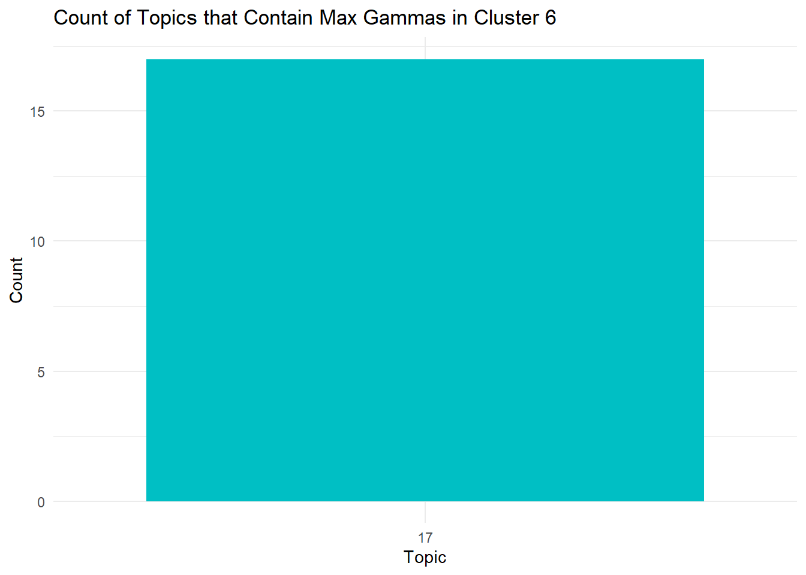
Observation: All max gammas in cluster 6 falls in Topic 17. No overlap with topic 10.
Let’s look at Cluster7.
cluster_7 <- plots_gamma_wider |> filter(cluster == 7)
cluster_7$max_value <- apply(cluster_7[, 2:31], 1, max)
cluster_7$max_colname <- apply(cluster_7[, 2:31], 1,
function(x) colnames(cluster_7[, 2:31])[which.max(x)])
count_cluster7 <- as.data.frame(table(cluster_7$max_colname))
count_cluster7$Var1 <- factor(count_cluster7$Var1,
levels = count_cluster7$Var1[order(-count_cluster7$Freq)])
ggplot(count_cluster7, aes(x = Var1, y = Freq)) +
geom_bar(stat = "identity", fill = "#00B0F6") +
labs(title = "Count of Topics that Contain Max Gammas in Cluster 7",
x = "Topic", y = "Count") +
theme_minimal()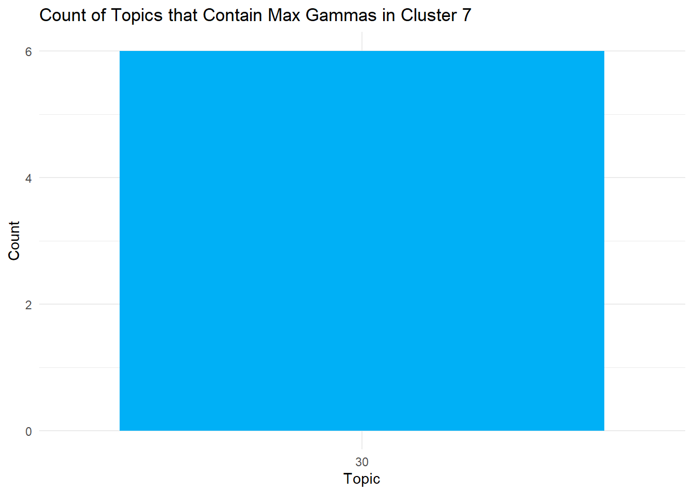
Observation: All max counts in cluster 7 falls in topic 30. Not much overlap with cluster10.
Let’s look at Cluster8:
cluster_8 <- plots_gamma_wider |> filter(cluster == 8)
cluster_8$max_value <- apply(cluster_8[, 2:31], 1, max)
cluster_8$max_colname <- apply(cluster_8[, 2:31], 1,
function(x) colnames(cluster_8[, 2:31])[which.max(x)])
count_cluster8 <- as.data.frame(table(cluster_8$max_colname))
count_cluster8$Var1 <- factor(count_cluster8$Var1,
levels = count_cluster8$Var1[order(-count_cluster8$Freq)])
ggplot(count_cluster8, aes(x = Var1, y = Freq)) +
geom_bar(stat = "identity", fill = "#9590FF") +
labs(title = "Count of Topics that Contain Max Gammas in Cluster 8",
x = "Topic", y = "Count") +
theme_minimal()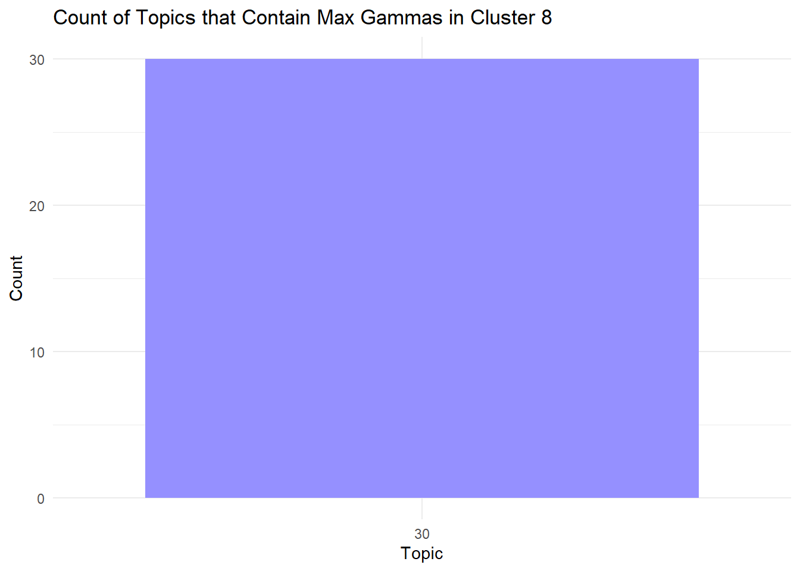
Observation: All max gammas in cluster 8 falls in Topic 30. No overlap with topic 10. But perhaps overlap with topic 7.
Let’s look at Cluster9:
cluster_9 <- plots_gamma_wider |> filter(cluster == 9)
cluster_9$max_value <- apply(cluster_9[, 2:31], 1, max)
cluster_9$max_colname <- apply(cluster_9[, 2:31], 1,
function(x) colnames(cluster_9[, 2:31])[which.max(x)])
count_cluster9 <- as.data.frame(table(cluster_9$max_colname))
count_cluster9$Var1 <- factor(count_cluster9$Var1,
levels = count_cluster9$Var1[order(-count_cluster9$Freq)])
ggplot(count_cluster9, aes(x = Var1, y = Freq)) +
geom_bar(stat = "identity", fill = "#E76BF3") +
labs(title = "Count of Topics that Contain Max Gammas in Cluster 9",
x = "Topic", y = "Count") +
theme_minimal()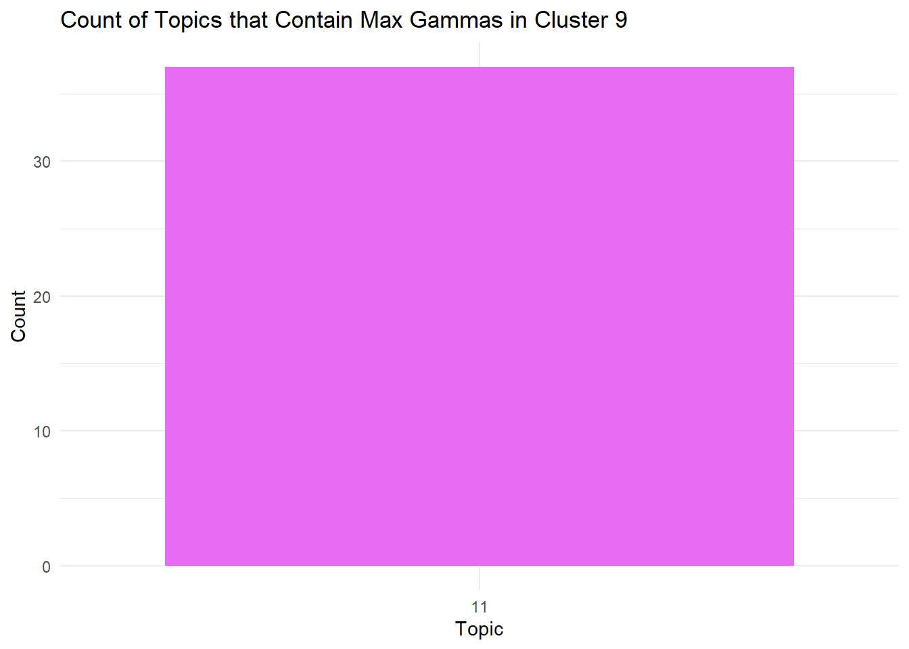
Observation: All max gammas in cluster 9 falls in Topic 11. No overlap with topic 10.
Let’s plot the count of all the max topics in each cluster:
count_cluster1$Cluster <- "Cluster 1"
count_cluster2$Cluster <- "Cluster 2"
count_cluster3$Cluster <- "Cluster 3"
count_cluster4$Cluster <- "Cluster 4"
count_cluster5$Cluster <- "Cluster 5"
count_cluster6$Cluster <- "Cluster 6"
count_cluster7$Cluster <- "Cluster 7"
count_cluster8$Cluster <- "Cluster 8"
count_cluster9$Cluster <- "Cluster 9"
count_cluster10$Cluster <- "Cluster 10"
# Combine the data frames using rbind()
combined_counts <- rbind(count_cluster1, count_cluster2, count_cluster3, count_cluster4,
count_cluster5, count_cluster6, count_cluster7, count_cluster8,
count_cluster9, count_cluster10)
ggplot(combined_counts, aes(x = Var1, y = Freq, fill = Cluster)) +
geom_bar(stat = "identity", position = "dodge") +
labs(title = "Count of Topics that Contain Max Gammas by Cluster",
x = "Topic", y = "Count") +
theme_minimal() +
scale_fill_manual(values = c("Cluster 9" = "#E76BF3", "Cluster 8" = "#9590FF",
"Cluster 7" = "#00B0F6", "Cluster 6" = "#00BFC4",
"Cluster 5" = "#00BF7D", "Cluster 4" = "#39B600",
"Cluster 3" = "#A3A500", "Cluster 2" = "#D89000",
"Cluster 1" = "#F8766D", "Cluster 10" = "#FF62BC"))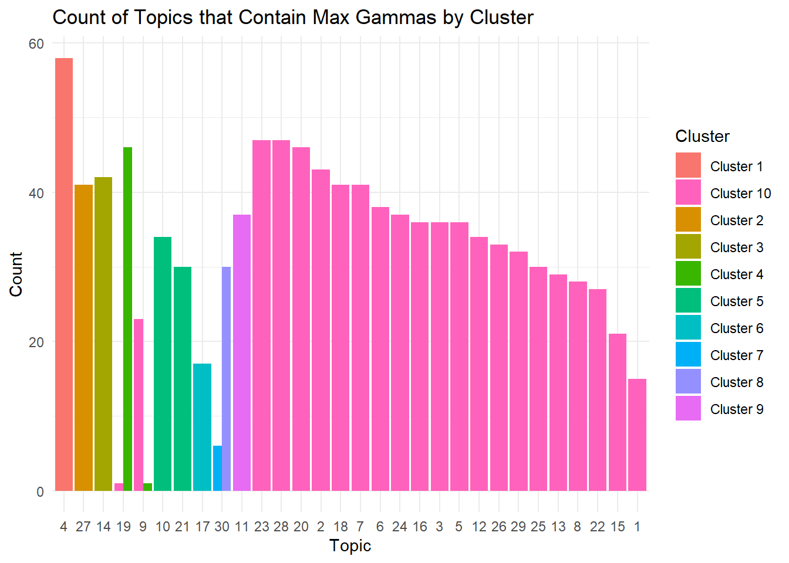
Observation: Generally, it seems like there’s not much overlap between the clusters except for cluster 7 and 8 which might be able to be combine into one. But each clusters seems to have a unique topic, which might’ve been the point of the clusters…let’s look closer at cluster 7 and 8 and topic 30.
# Get the top 10 terms for topic 30
terms_topic_30 <- terms(plots_lda, 10)[, 30]
print(terms_topic_30) [1] "father" "kidnapped" "land" "fight" "women"
[6] "morrell" "monster" "daltons" "government" "return" Observation: looking at these terms, perhaps cluster 7 and 8 are suspense-action kidnapping movies?
# Merge cluster8 with movie_with_genres df to check our estimation
movie_plots_with_genres <- read.csv("movie_plots_with_genres.csv", header = T)
movie_plots_with_genres <- as.data.frame(movie_plots_with_genres)
colnames(movie_plots_with_genres)[colnames(movie_plots_with_genres) == "Movie.Name"] <- "document"
cluster_8$document <- trimws(tolower(cluster_8$document))
movie_plots_with_genres$document <- trimws(tolower(movie_plots_with_genres$document))
common_docs <- intersect(cluster_8$document, movie_plots_with_genres$document)
merged_data <- merge(cluster_8, movie_plots_with_genres, by = "document")
merged_data$Genre <- factor(merged_data$Genre,
levels = names(sort(table(merged_data$Genre), decreasing = TRUE)))
ggplot(merged_data, aes(x = Genre)) +
geom_bar(fill = "skyblue") +
labs(title = "Count of Movies by Genre from Cluster 7 & 8",
x = "Genre", y = "Count") +
theme_minimal()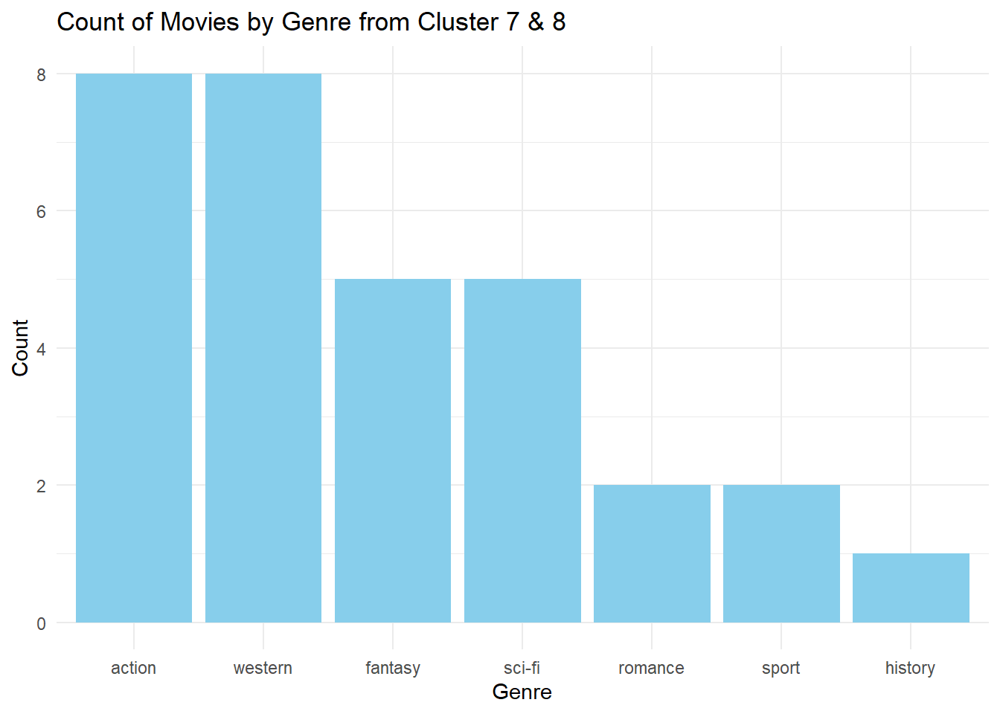
Let’s do the same thing and check the genres of Cluster 1.
# Merge cluster1 with movie_with_genres df to check our estimation
cluster_1$document <- trimws(tolower(cluster_1$document))
merged_data1 <- merge(cluster_1, movie_plots_with_genres, by = "document")
merged_data1$Genre <- factor(merged_data1$Genre,
levels = names(sort(table(merged_data1$Genre),
decreasing = TRUE)))
ggplot(merged_data1, aes(x = Genre)) +
geom_bar(fill = "#F8766D") +
labs(title = "Count of Movies by Genre from Cluster 1", x = "Genre", y = "Count") +
theme_minimal()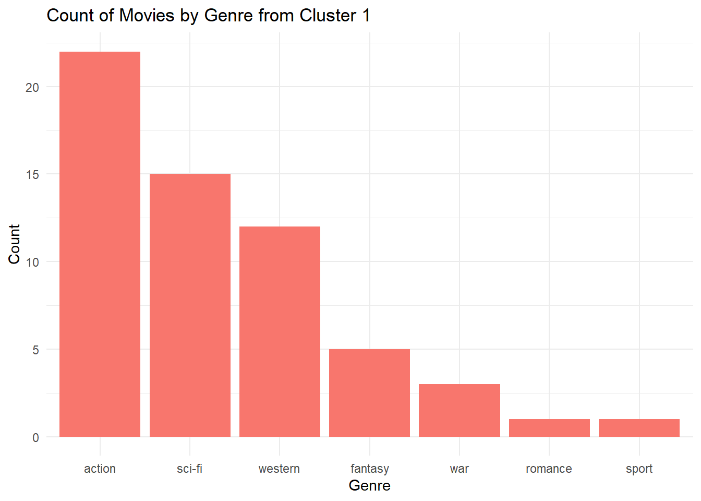
terms_topic_4 <- terms(plots_lda, 10)[, 4]
print(terms_topic_4) [1] "life" "war" "woman" "death" "brothers" "cowboy"
[7] "line" "drug" "world" "police" Observation: Topic 4 also seems to be action. Most of these genres show up under action and western not sure what else to do to make it more accurate…this is as far as I got…